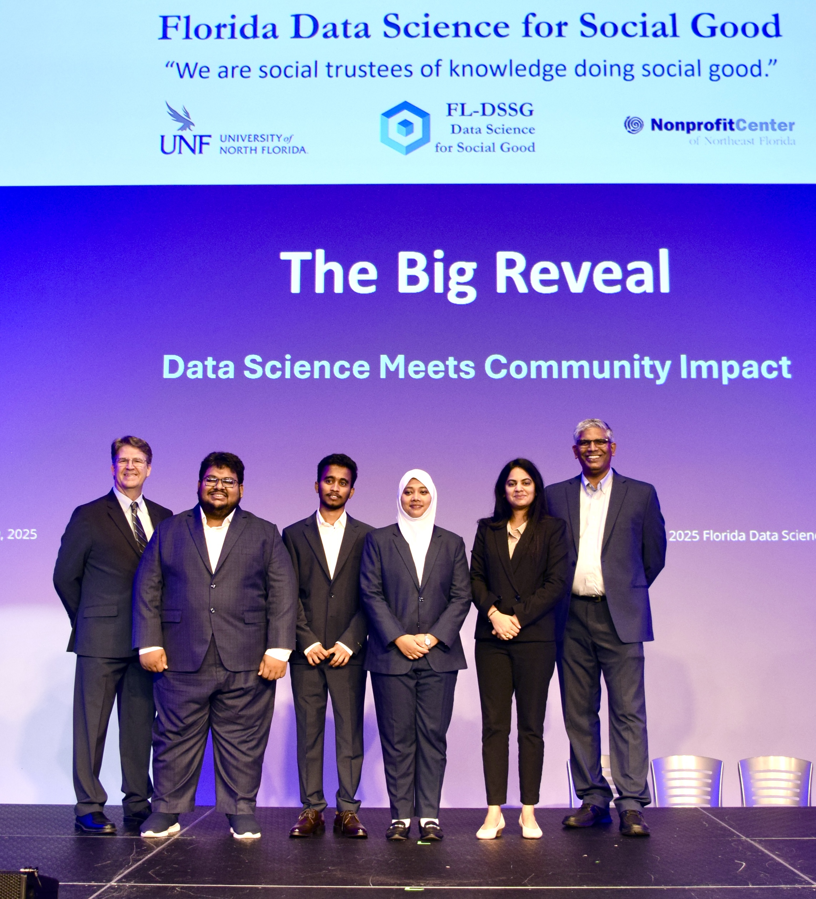

Intro
I’m Faisal Chowdhury Galib, a Statistics graduate student at the University of North Florida.
I work on statistical modeling, machine learning, biostatistics, and public health research,
applying data-driven methods to solve real-world problems.
I’m currently a Graduate Teaching Assistant at the University of North Florida and have research
experience at the International Centre for Diarrhoeal Disease Research, Bangladesh (icddr,b) and as a
Data Science Intern at Florida Data Science for Social Good (FL-DSSG). Check out my projects for research,
analytics, and applied data science work.
Work

Experience
-
Graduate Teaching Assistant — University of North Florida (Aug 2024 – Present)
Led recitation sessions, graded assignments and quizzes, and facilitated problem-solving sessions for undergraduate students while providing academic support at the University Smart Center.
-
Data Science Intern — Florida Data Science for Social Good (May 2025 – Jul 2025)
Performed data cleaning and web scraping, and developed predictive models and interactive dashboards to communicate data-driven insights for community-focused projects.
-
Research Assistant / Intern — International Centre for Diarrhoeal Disease Research, Bangladesh (Dec 2021 – May 2023)
Managed and analyzed field datasets, developed efficient workflows from data entry to reporting, and contributed to research reports and peer-reviewed scientific publications in environmental and public health studies.
-
Research Data Analyst (Part-Time) — SRCBD (Apr 2020 – Sep 2021)
Conducted quantitative analysis and created data visualizations to support project summaries, and manuscript preparation.
Selected Projects
-
Mapping The Great Wealth Transfer to Women
FL-DSSG (LISC-JAX), Data Science Intern
Jacksonville, Florida, USA | May 2025 – July 2025
Responsibilities: Data Curation, Predictive Modeling, and Visualization
-
Prevalence of Antibiotic Resistant Genes and Biofilm Formation Capability of E. coli Isolated from Hospital Samples
ICDDR,B, Research Assistant
Dhaka, Bangladesh | Oct 2022 – May 2023
Responsibilities: Data Management, Analysis, and Visualization
-
Efficiency of Faecal Sludge Management (FSM) Technologies in the Rohingya Camps
ICDDR,B – UNICEF, Research Assistant
Dhaka, Bangladesh | Dec 2021 – May 2023
Responsibilities: Data Management, Analysis, and Visualization
-
Characterizing the Multi-Dimensional Risks and Challenges for Safe Healthcare Water Services: Case Study of Bangladesh Hospitals
ICDDR,B – University of Oxford, Research Assistant
Dhaka, Bangladesh | Feb 2022 – Mar 2023
Responsibilities: Statistical Analysis and Report Writing
-
WASH Situation Assessment in Bashan Char and Database Monitoring
ICDDR,B – UNICEF, Research Assistant
Dhaka, Bangladesh | Dec 2021 – Nov 2022
Responsibilities: Data Entry and Data Management
-
Effluent Monitoring Surveillance of Rohingya Camps and Adjacent Host Communities (Baseline)
ICDDR,B – Oxfam, Intern
Dhaka, Bangladesh | Dec 2021 – Jun 2022
Responsibilities: Data Entry, Data Curation, and Analysis
About

Education
- Master of Science in Statistics — University of North Florida, Jacksonville, FL
- Bachelor of Science in Statistics — University of Dhaka, Bangladesh
Skills
Programming & Statistical Software: R, Python, SQL, SAS, JMP, Stata, SPSS, MATLAB, Tableau
Productivity & Documentation Tools: Microsoft Office (Word, Excel, PowerPoint), LaTeX
Research & Publications
Published Papers
-
Islam, M.R., Alam, M.A.U., Moniruzzaman, M., Galib, F.C., et al.
Exploring fecal sludge treatment technologies in humanitarian settings at Cox’s Bazar, Bangladesh.
Frontiers in Environmental Science.
DOI
-
Moniruzzaman, M., Hussain, M.T., Ali, S., Galib, F.C., et al.
Multidrug-resistant Escherichia coli isolated from hospital environments in Bangladesh.
Heliyon.
DOI
-
Ahamed, H., Hasan, K.T., Islam, M.T., Galib, F.C. (2020).
Lockdown Policy Dilemma: COVID-19 Pandemic versus Economy and Mental Health.
Journal of Biomedical Analytics.
DOI
Submitted Papers
-
Hussain, M.T., Rahman, A., Hossain, M.S., Galib, F.C., et al.
Fecal sludge and drinking water as reservoirs of multidrug resistant ESBL producing
Escherichia coli in Rohingya Camps, Bangladesh.
Scientific Reports (2025).
-
Emma, T.A., Akib, M.M.H., Akter, S., Galib, F.C., Kader, M.R.
Socioeconomic and demographic factors influencing contraceptive use in Bangladesh.
Health & Social Care in the Community (2025).
Work in Progress
-
Galib, F.C., Jannatul, T., Tanvia, L., et al.
Media Exposure and Contraceptive Method Use in Bangladesh:
A Multilevel Multinomial Analysis (2025).
-
Galib, F.C., Akib, M.M.H., Hussain, M.T.
Determinants of Malnutrition Among Children Under Five Using Multinomial Logistic Regression Models.
Dhaka University Journal of Science.
Poster Presentations
-
Singapore International Water Week (SIWW 2024) —
Evaluating Fecal Sludge Treatment Technologies in Humanitarian Contexts.
-
ASTMH Annual Meeting 2022, Seattle —
Molecular Characterization of ESBL producing
Escherichia coli.
-
WaterMicro 2023, Darwin, Australia —
Prevalence of multidrug-resistant
Escherichia coli in fecal sludge treatment plants.
Conference Presentations
-
Data Science Meets Community Impact (2025) —
Spatial Analysis for Identifying At-Risk Heirs’ Property,
Florida Data Science for Social Good.
-
International Perspective on Water Resources (2023) —
Molecular Characterization of ESBL producing
Escherichia coli.
-
5th Young Scientist Congress (2022) —
Determinants of Malnutrition Among Children Under Five.
Contact
Location: Jacksonville, FL
Phone: (+904) 566-3453
Email: fcgstatdu@gmail.com